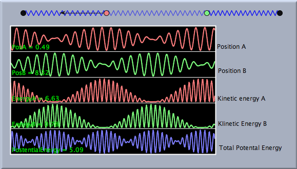
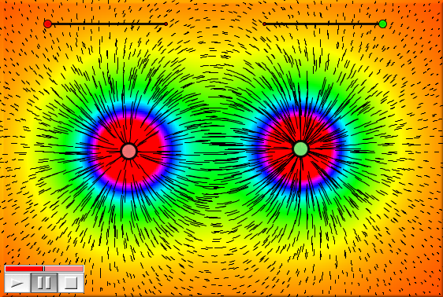

CindyLab と CindyScript
CindyLab と CindyScript の相互関係は非常に重要です。 CindyScriptは位置、速度と力を含むシステムのすべての物理的変数に関与します。CindyScriptにより、物理的な展開に影響を与え たり 解析する ことができます。物理シミュレーションの解析は、数値データで終わるか、変数の動きが直接目で見えるような視覚効果に終わるかもしれません。次の図は、それ自身の重さによる張力のもとにある橋の構造を示します。 CindyScript は、ロッドの圧縮や伸張をハイライト表示するのに用いました。赤は伸張、青は圧縮に対応します。緑は圧縮も伸張もないことを示します。色の効果は、物理実験に次の3行の CindyScriptコードを付け加えてできました。
segs=allsegments(); f(x):=hue(max((min((0.5,x+0.3)),0.0))); forall(segs,#.color=f(A.y*#.ldiff))
1行目で描画されているすべての線分のリスト segs を定義します。2行目で、実数を色番号に対応させる関数を定義します。3行目で、それぞれの線分の色を自然長からの変化に応じて設定します。
 |
| 橋の張力 |
CindyScript は、物理実験を解析する特別な方法(命令)も提供します。たとえば、drawcurve 命令は、物理シミュレーションにおける変数の値のカーブプロッタのように使えます。次の図は、2つの調和的なバネ振り子のエネルギーの流れを示します。2つの振り子の間でエネルギーが前後に移る様子を観察することができます。
 |
| 連結振動子の動き |
最後の例は、colorplot命令をdrawfield命令とともに、静電場における磁束を視覚化するのに使っています。しかしながら、マウスのドラッグに応じてなめらかに動くためには、かなりのコンピュータの力が必要です。
 |
| 静電場における磁束 |
CindyScript は、物理効果を分析すること以外にも使うことができます。物体の物理変数をコントロールするためにCindyScriptを使うこともできます。特に、CindyScriptでコントロールすることのできるあらゆる物体をシミュレートするフラグがあります。このフラグは物理属性がシミュレーションによって考慮されているかどうかに関わらずコントロールすることができます。このような特徴を使えば、機械やゲームをその機能的な属性とともにシミュレートするのにシンデレラをすぐに使うことができます。
Page last modified on Thursday 28 of July, 2011 [13:35:05 UTC].
The original document is available at
http://doc.cinderella.de/tiki-index.php?page=CindyLab%20and%20CindyScriptJ